Release regression and performance review · 12 October 2026
645 core checks · 4,226 graphics checks · 43,080 campaign observations · 66 complete save comparisons
Save failure/recovery, independent adventures, title/menus, earned opening and finale restarts all pass. Personal save/profile files are unchanged.
Physical controller testing is unverified: no controller was available. These results cover automated input and graphics. Apple M5 Max / macOS 26.7.1 only; ad-hoc signed development preview.
Detailed report and controller checklist · Raw performance measurements
Nine scenes at two resolutions, 5,400 measured frames, shipping defaults. About 60 FPS throughout; three intervals over 25 ms, worst 42.31 ms. Warm scenes; screenshots excluded. Diagnostic scenes reveal terrain, hold world ticks and keep effects/animation running.
| Scene | Width | FPS | Frame p95 (ms) |
|---|---|---|---|
| maynard | 1280 | 60.01 | 16.93 |
| snow | 1280 | 60.02 | 16.86 |
| forest | 1280 | 60.05 | 16.82 |
| ervyn | 1280 | 60.03 | 16.81 |
| breeding | 1280 | 60.10 | 17.00 |
| fire | 1280 | 60.01 | 16.86 |
| ice | 1280 | 60.01 | 16.97 |
| hell | 1280 | 60.06 | 16.83 |
| three-enemy-battle | 1280 | 60.08 | 16.85 |
| maynard | 1920 | 60.09 | 16.86 |
| snow | 1920 | 60.03 | 16.87 |
| forest | 1920 | 60.02 | 16.82 |
| ervyn | 1920 | 60.03 | 16.80 |
| breeding | 1920 | 60.07 | 16.94 |
| fire | 1920 | 60.09 | 16.86 |
| ice | 1920 | 60.16 | 16.95 |
| hell | 1920 | 60.01 | 16.88 |
| three-enemy-battle | 1920 | 60.11 | 16.91 |
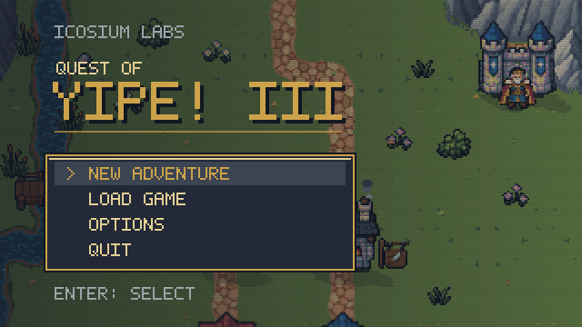
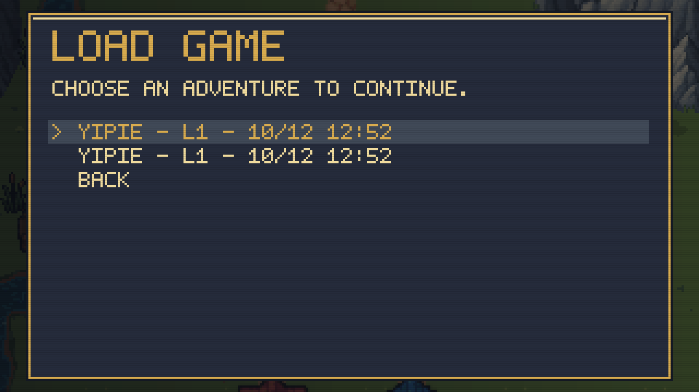
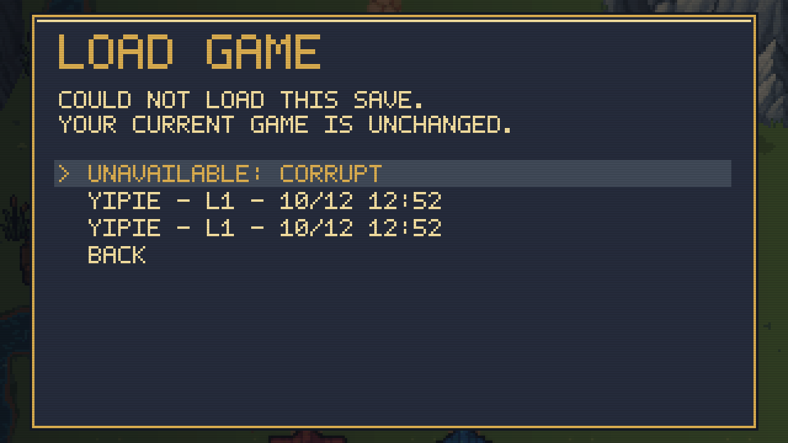
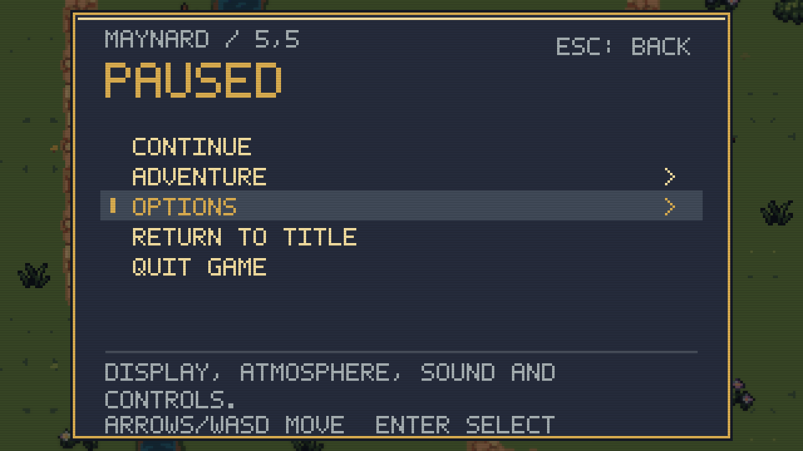
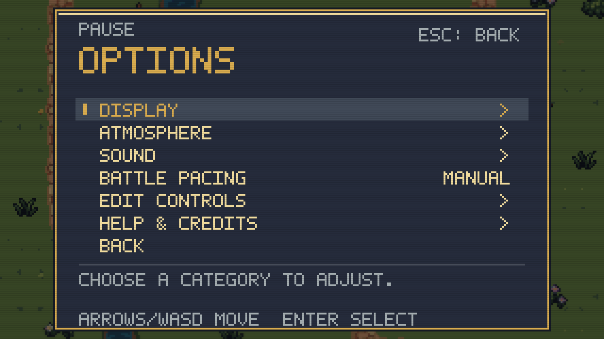
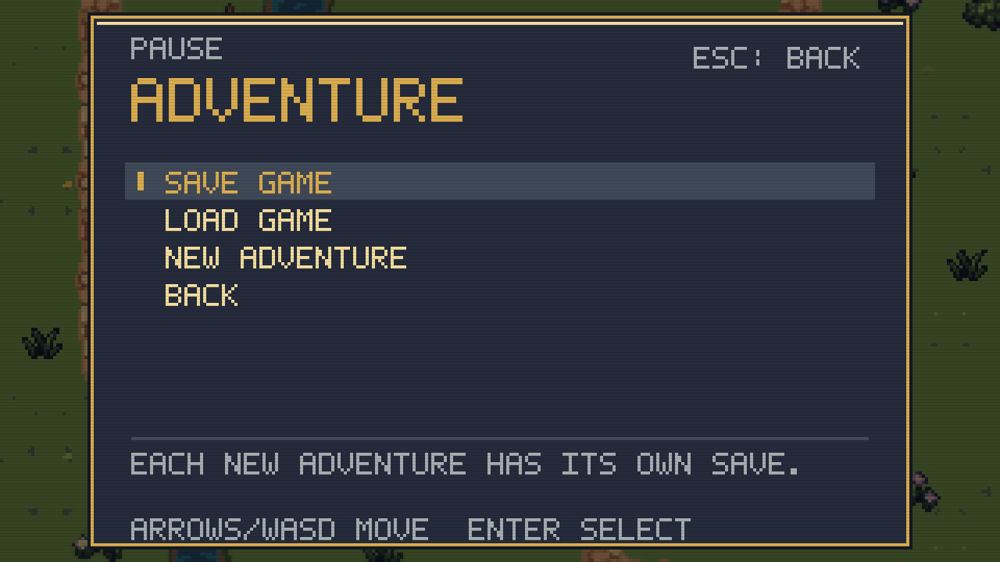
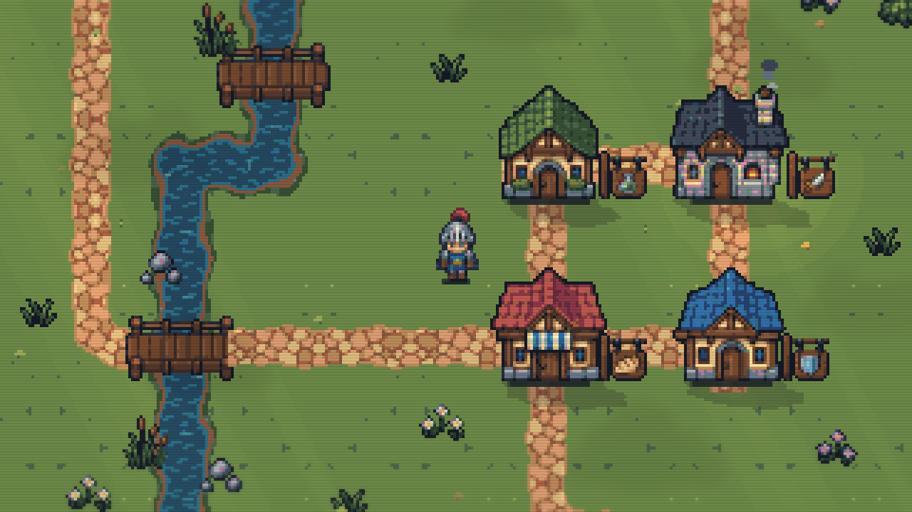
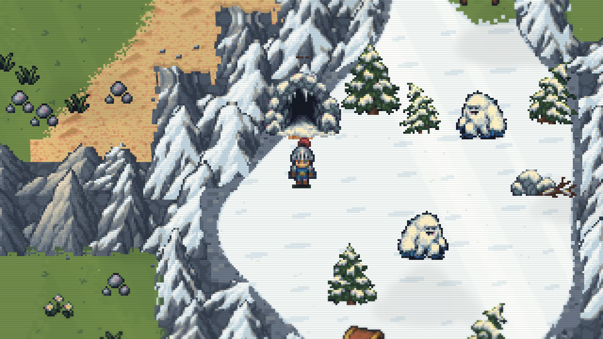
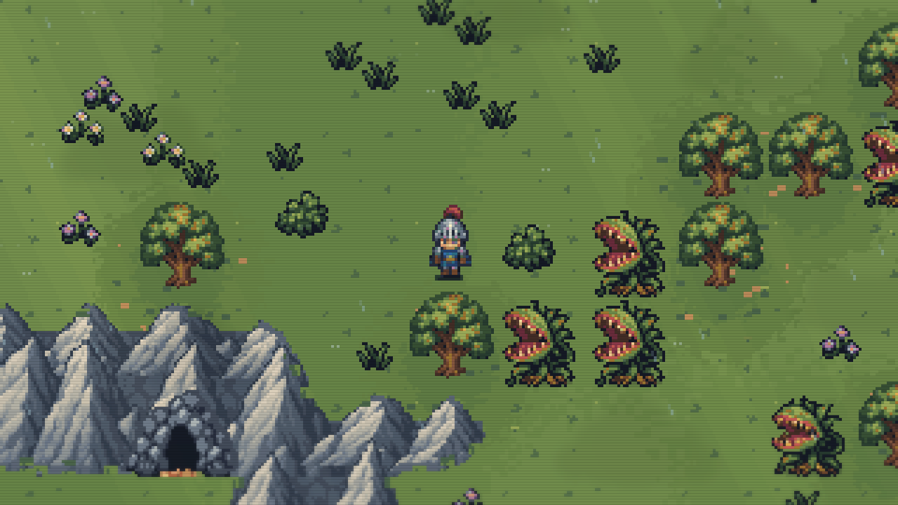
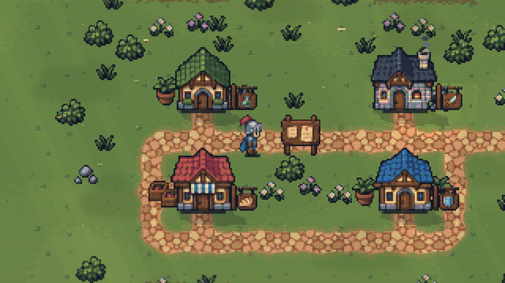
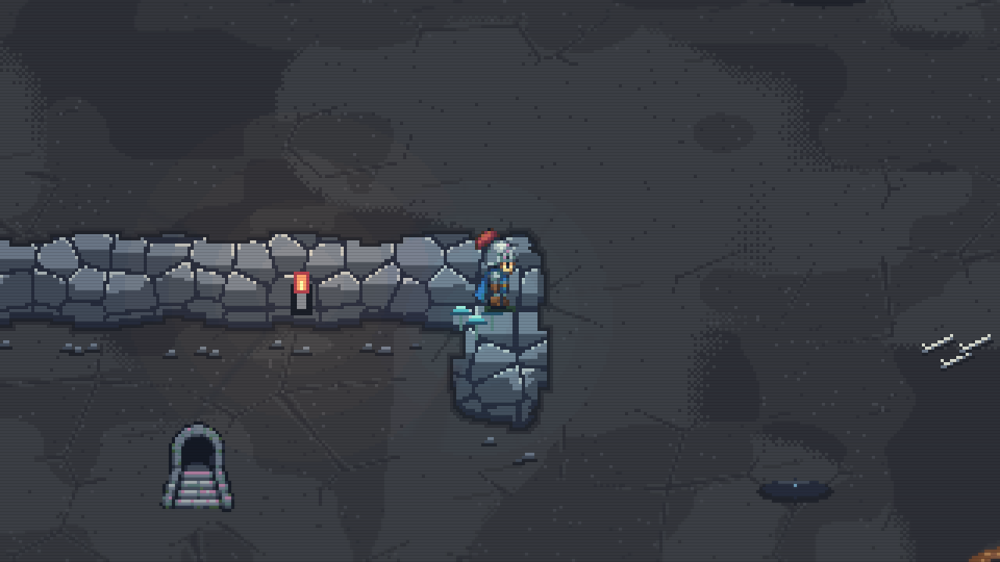
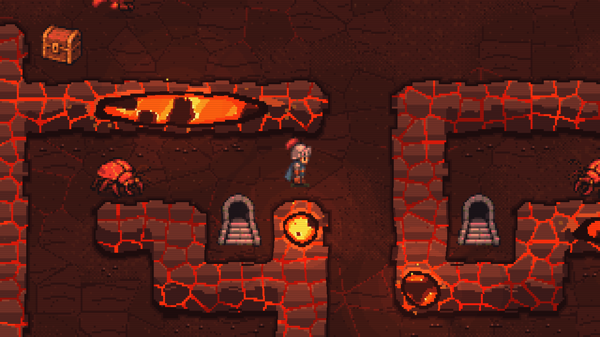
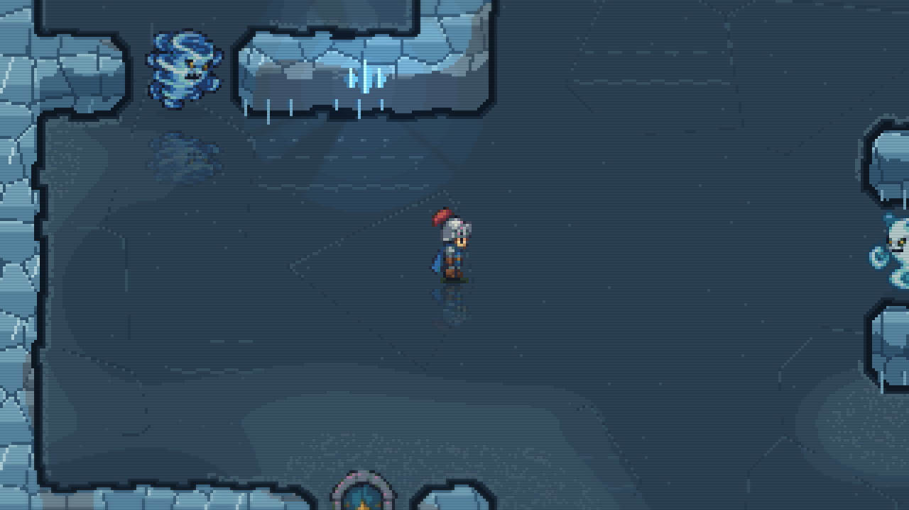
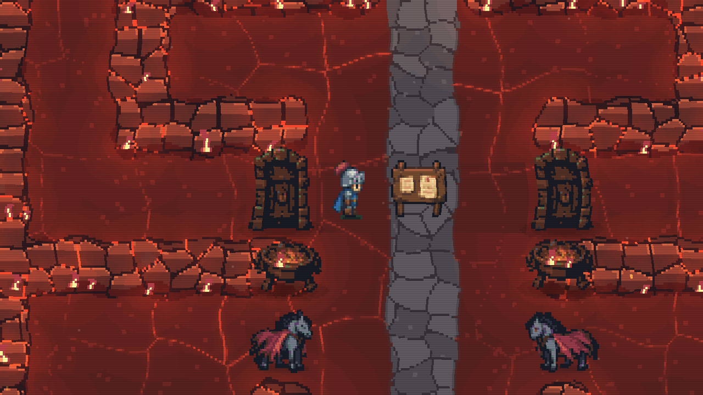
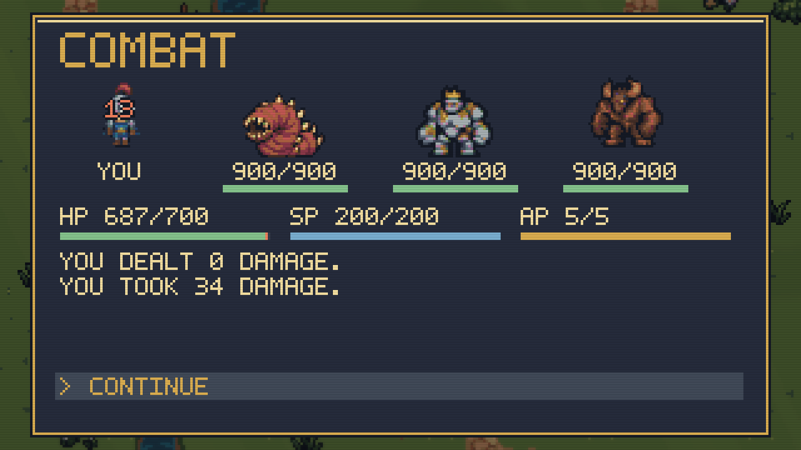
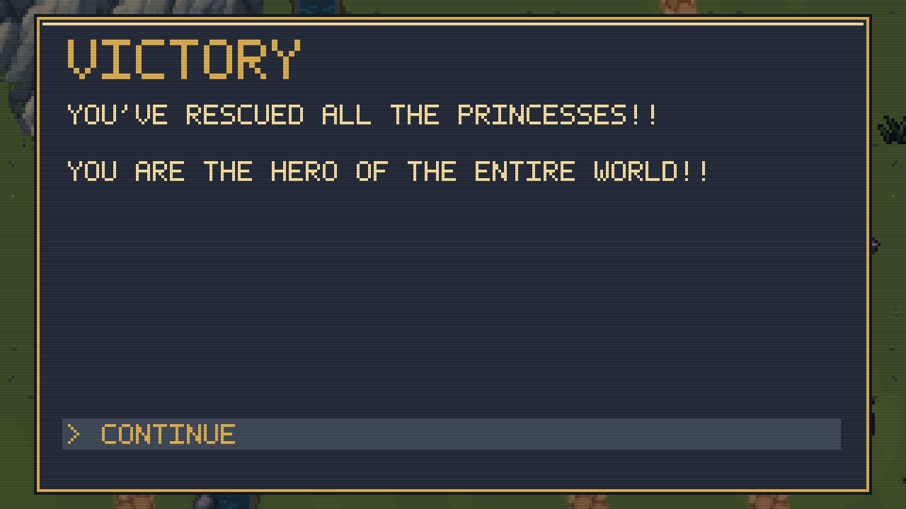